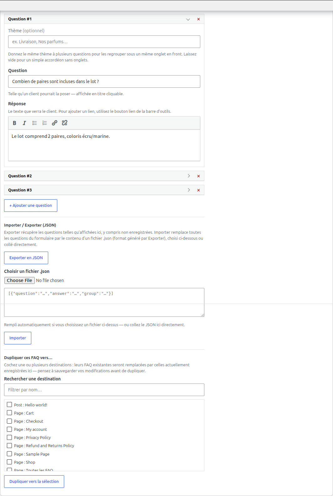
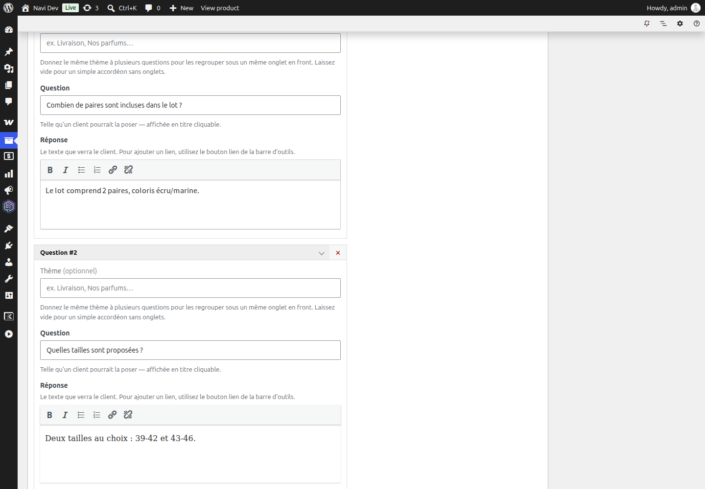
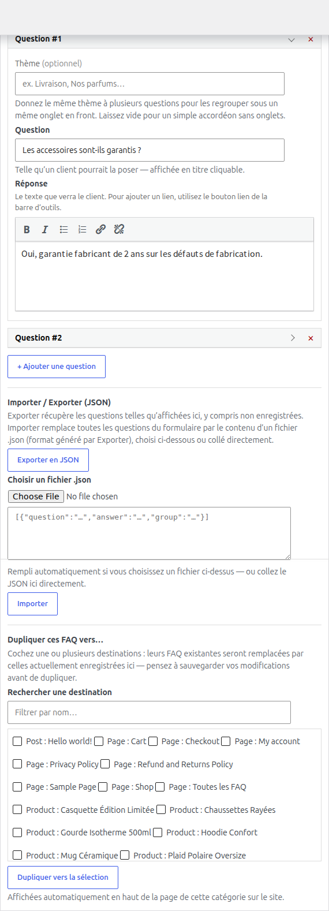
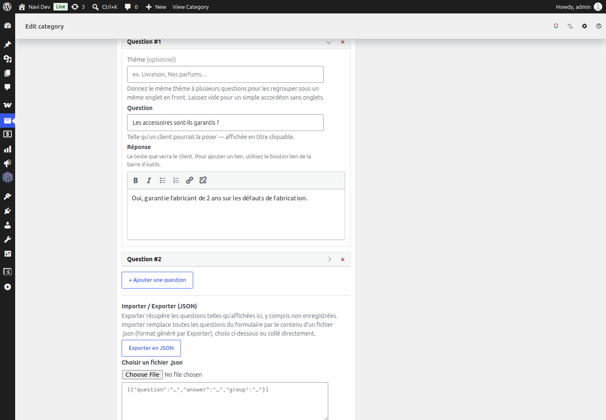
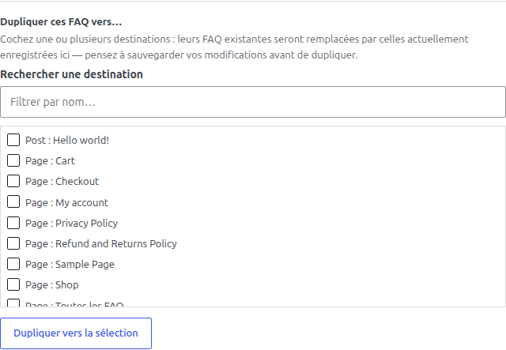
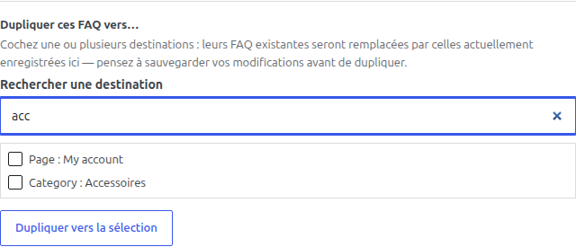
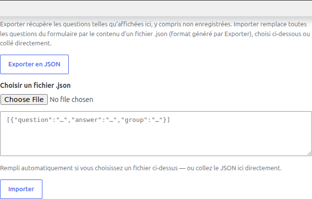
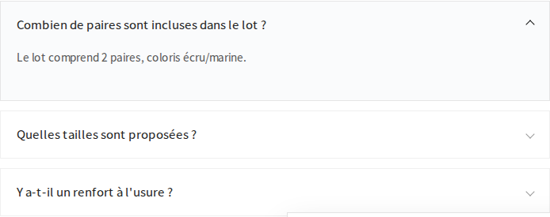
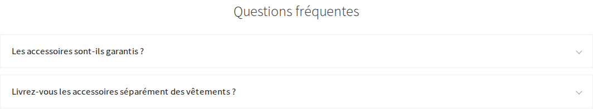

Pourquoi ce plugin
Les plugins FAQ existants (ex. FAQ Magic) gèrent les articles, pages et produits, mais pas les catégories de produits WooCommerce — aucun moyen natif d'ajouter une FAQ à une page d'archive de catégorie. Navi FAQ comble ce manque, avec une structure de données propre et un regroupement des questions par thème pour les FAQ plus étoffées.
Développé comme plugin compagnon de Saito Navi.
Où c'est stocké
Chaque FAQ — qu'elle soit sur un article, une page, un produit ou une catégorie — est stockée dans une seule meta, _navi_faq_items (post meta ou term meta selon le cas), sous forme de tableau :
array(
'question' => 'Livrez-vous à l\'international ?',
'answer' => '<p>Oui, ...</p>', // HTML limité (wp_kses_post)
'group' => 'Commandes & Livraison', // optionnel, '' = pas de thème
)Une seule source de vérité, un seul format, quel que soit l'endroit où la FAQ est éditée ou affichée.
post, page, product) et les taxonomies (product_cat) sont filtrables via navi_faq_post_types et navi_faq_taxonomies.
Éditer une FAQ — fiche produit
Sur une fiche produit, la FAQ vit dans un panneau autonome « Navi » (metabox WordPress classique, add_meta_box()), sous l'éditeur de description. Chaque question est une ligne repliable : titre + thème au clic, question et réponse (éditeur visuel TinyMCE) une fois dépliée.

Cliquer sur l'en-tête d'une question la déplie et affiche ses champs : thème optionnel, question (« telle qu'un client pourrait la poser »), réponse en HTML limité.

Éditer une FAQ — catégorie de produit
Un écran d'édition de terme (catégorie) n'a pas de add_meta_box() — WordPress y injecte des champs différemment ({taxonomy}_edit_form_fields). Navi FAQ y reproduit quand même l'habillage visuel d'un postbox (bordure, bandeau de titre « Navi ») pour que les deux écrans donnent la même impression de « boîte », même si le mécanisme WordPress sous-jacent diffère.

C'est exactement le même composant d'édition (JS, rendu des lignes, éditeur, dupliquer, import/export) que sur la fiche produit — seul l'habillage autour change pour s'adapter à l'écran WordPress.

Dupliquer des FAQ vers d'autres fiches
Sous la liste des questions, un bloc « Dupliquer ces FAQ vers... » permet de copier le jeu de questions actuellement affiché (y compris non enregistré) vers une ou plusieurs autres fiches — articles, pages, produits ou catégories.

Le champ « Rechercher une destination » filtre la liste en direct pendant la frappe (ici, taper « acc » ne garde que « My account » et « Category: Accessoires ») :

Côté technique : un clic sur « Dupliquer vers la sélection » déclenche une requête AJAX (wp_ajax_navi_faq_duplicate) protégée par un nonce dédié (navi_faq_duplicate), sans rechargement de page.
Importer / exporter en JSON
Chaque écran d'édition inclut aussi un mini import/export pour sauvegarder ou réutiliser un jeu de questions en dehors de WordPress :

- Exporter en JSON récupère les questions telles qu'affichées à l'écran, y compris les modifications non encore enregistrées.
- Importer remplace la totalité des questions du formulaire par le contenu d'un fichier
.json(même format que l'export), choisi via le sélecteur de fichier ou collé directement dans la zone de texte.
Pratique pour dupliquer une trame de FAQ entre deux installations WordPress, ou garder une sauvegarde hors base de données.
Ce que voit le visiteur
Accordéon simple
Sans thème renseigné sur les questions, la FAQ s'affiche en accordéon simple (<details>/<summary> natifs) :

Sur une page de catégorie
Les catégories de produits n'ont pas de zone de contenu où poser un shortcode à la main — Navi FAQ y affiche donc la FAQ automatiquement, en haut de la page d'archive :

Regroupement par thème (onglets)
Donner le même thème à plusieurs questions les regroupe automatiquement sous un même onglet en front. Une seule catégorie de thème (ou aucune) : accordéon simple, pas d'onglets inutiles pour rien. Navigation clavier flèches gauche/droite/Home/End entre onglets (pattern ARIA Tabs).
Shortcodes
| Shortcode | Effet |
|---|---|
[navi_faq] | FAQ du contexte courant : article/page/produit affiché, ou page d'archive d'une taxonomie couverte |
[navi_faq_all] | Toutes les FAQ du site, groupées par titre — pour une page « Questions fréquentes » centralisée |
SEO — schéma FAQPage (JSON-LD)
Le plugin génère côté serveur un schéma FAQPage en JSON-LD, uniquement là où le contenu est réellement visible (recommandation Google) :
- toujours sur une page de catégorie couverte (puisque la FAQ y est affichée automatiquement) ;
- seulement si le shortcode
[navi_faq]est effectivement posé dans le contenu, sur un article/une page/un produit.
Pas de schéma « fantôme » pointant vers du contenu qui n'existe pas réellement sur la page.
Résumé technique
Architecture, hooks, fichiers
- Donnée : une seule meta
_navi_faq_items(post meta ou term meta), tableauquestion/answer(HTML limité,wp_kses_post) /group. - Admin fiche produit :
includes/navi-panel.php— metabox autonomenavi_panel_box(add_meta_box()), avec un système d'onglets internes (navi_product_panel_tabs) activé seulement si 2 fonctionnalités Navi ou plus sont enregistrées. - Admin catégorie :
includes/admin.php, fonctionnavi_faq_render_term_field(), accrochée sur{taxonomy}_edit_form_fields— pas deadd_meta_box()possible sur un écran de terme, d'où le.navi-panel-boxqui reproduit l'habillage visuel à la main. - Duplication : AJAX
wp_ajax_navi_faq_duplicate, noncenavi_faq_duplicate, remplace les FAQ des destinations cochées. - Front :
includes/frontend.php— shortcodesnavi_faqetnavi_faq_all, accordéon<details>/<summary>, onglets ARIA si plusieurs thèmes, schémaFAQPageJSON-LD injecté conditionnellement. - Couverture filtrable sans toucher au code :
navi_faq_post_types(défautpost,page,product) etnavi_faq_taxonomies(défautproduct_cat).